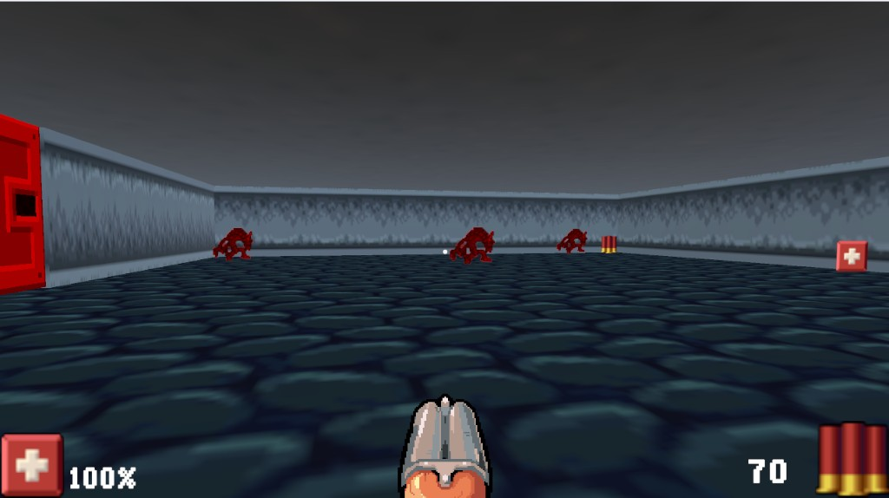
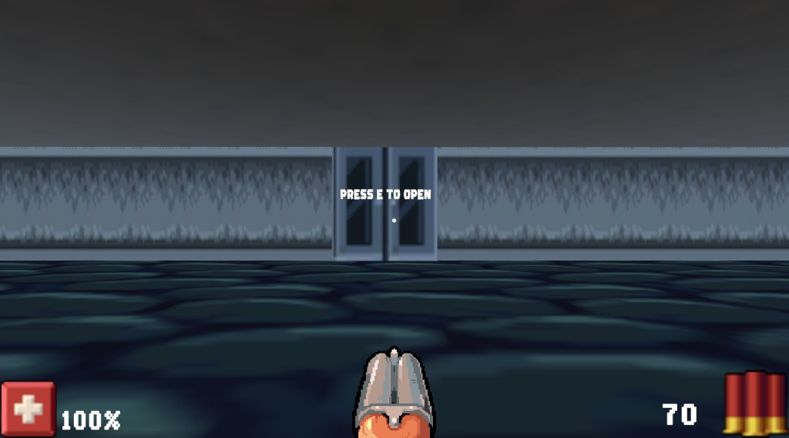

Old School FPS
Personal retro-style first-person shooter in Unity — pixel textures, enemy AI, shooting, and keycard doors.

What is this project?
Old School FPS is a personal Unity project — a short 90s-style shooter where you move through pixel-textured levels, fight billboard enemies, pick up health, and unlock doors with keycards. Art comes from licensed retro FPS asset packs; gameplay systems and level scripting are my own work.

What I built
- Player movement, camera look, health, and raycast shooting.
- Enemy AI — NavMesh patrol, chase, attack range, and projectile firing.
- Level interactables — doors, keycards, health pickups, and collectables.
- Main menu, cursor lock, and game restart flow.